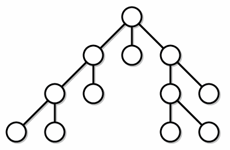

Overview
Depth First Search (DFS) is one of the main type of tree-searching algorithm. The idea is that this algorithm explores any particular path all the way “down” to the leaves of the path, and then slowly traverses back up the tree. We start out at the root vertex and then pick any path connecting the root to a leaf, exploring all of the intermediate vertices in the process.

Algorithm
dfs_algorithm {
1. create a stack of vertices;
2. add root to the stack to start;
while stack is not empty {
3. pop vertex from top of stack;
4. make sure this vertex has not been visited before;
5. look at it's value and do things as appropriate;
6. push the children of the vertex to the top of the stack;
7. mark the vertex as visited;
}
}
Implementation
As we can see, the algorithm is really similar to the BFS algorithm, which the exception that we use a stack to decide which vertex to visit next instead of queue. This rather subtle change has a really big difference on how we traverse through the tree: because a stack if a LIFO data structure, the children of nodes will be visited before other parent nodes at the same depth. This allows the algorithm to explore paths all the way down to the leaves, which is why the algorithm is called depth first search.
In general, DFS is usually a faster algorithm than DFS, and while it doesn’t find the shortest, optimal path between the root and a vertex like BFS does, it’s able to find a path rather quickly.